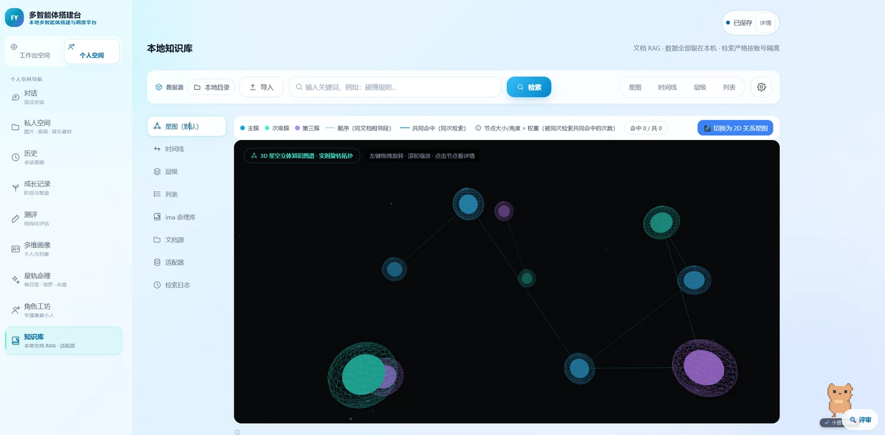
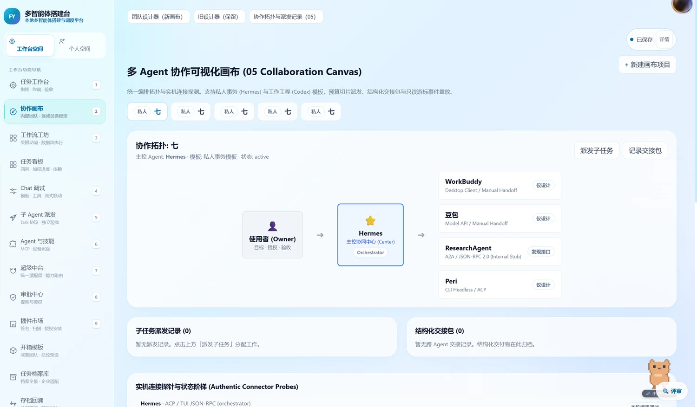
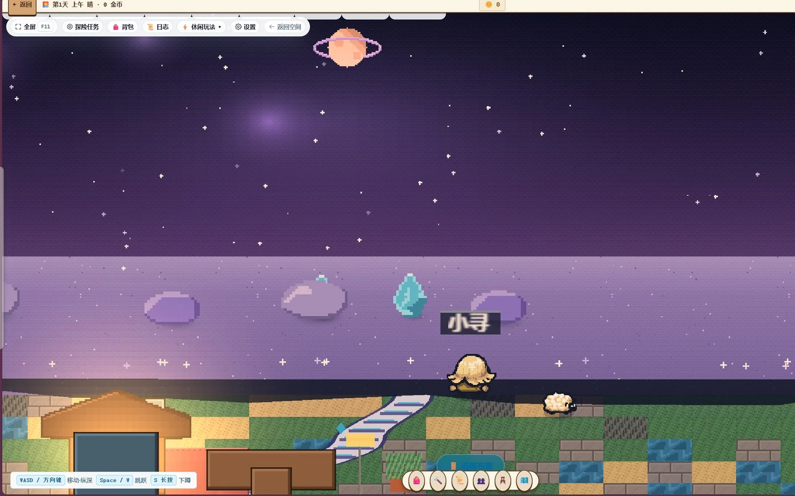

FY Orbit
星轨
本地运行 · 本地能力可离线 · 可视化与代码受限 DSL 互转 · 统一调度外部 Agent
既能搭建你自己的 AI 团队，也能统一调度别人造好的 Agent。
源码可用 · 非商业用途免费 · 开发评估
把智能体编成一张星图
从一个目标，到可以检查的结果
工作台接收输入，服务端检查身份、权限与预算，执行配置好的节点或 Agent，再检查结果。虚线表示需要接线或专项验证的路径。
用户目标 → 工作台 → 身份与 owner 检查 → 流程校验与路由 → 权限、预算、人工审批 → 已配置节点或 Agent → 结果 → 人工与测试验收。SQLite 保存业务记录、快照和审计；模型和外部 Agent 需逐条配置联调。
查看 Mermaid 源码
flowchart TD
U["用户目标与输入"] --> UI["React 工作台：画布 / DSL / 任务"]
UI --> API["FastAPI：身份验证与 owner 隔离"]
API --> D["流程校验 / 团队定义 / 能力路由"]
D --> G["权限 / 预算 / 人工审批"]
G --> E["执行：本地节点或已配置的 Agent"]
E --> R["结果 / 状态 / 交付物"]
R --> V["人工检查与测试验收"]
V --> UI
API --> DB[("SQLite：业务记录 / 快照 / 审计")]
E -. "需逐条接线和联调" .-> X["本地或云端模型 / MCP / A2A"]
R -. "各执行面恢复能力不同" .-> DB
G -. "高危操作待决" .-> H["HITL 裁决"]
H --> G当前属于受控评估阶段。历史 Release、公开 main 与本地修复的能力不同。查看当前限制；这张图不是全功能验收证明。
四项能力，集中在一个本地工作台
星轨围绕本地工作台整合这些能力，各模块的接线和验证范围不同。授权范围为源码可用，非商业用途免费。
工作台运行在你自己的电脑上
支持本地使用；远程模型、Agent 和云盘需要网络、凭证及授权。你的资料、模型配置、工作流与知识库，全部存在本机，默认本地保存；调用云模型或远程连接器可能向所选服务发送数据。
数据主权在你手上源码可用（BSL 1.1），非商业用途免费
源码按 BSL 1.1 提供，允许范围内的非商业用途免费；商用需另行授权。模型 API、硬件和外部服务可能收费。
BSL 1.1 · 商用另行授权小白拖拽，高手写码，同一张图
可通过拖拽编辑受支持的流程；实际执行取决于节点接线与连接配置；需要精调时，直接写代码定义状态、节点与逻辑——受限 DSL 可导入导出；不承诺任意代码实时无损互转，不是两套系统。
可视化 × 代码，不二选一不只是搭建，还能指挥别人的 Agent
把外部成品 agent 与自己搭建的 agent 放进同一个调度中枢：统一路由、统一权限、统一审计、实时同步状态。支持的模型 API、MCP 和外部 Agent 需配置并逐项联调。
从工具箱到指挥中枢它长什么样，看一眼就明白
以下是历史版本截图或设计展示，界面存在不代表每条执行链均已验收。



好看的画面，是顺手加上的
个性化定制的 AI 游戏角色，以及持续更新的玩法。不用另外装一个软件，它本来就在这个工作台里。
以上均为历史实机截图与设计稿。想先看实机效果，可直接下载试用或在本地启动。
这些问题是市面上普遍存在、长期没被解决的
左边是用户每天在忍受的事，右边是我们的做法。
四类用户，长期被忽略
现有产品要么只服务开发者，要么只服务小白，要么把数据锁在云上。我们同时照顾到。
不懂代码，也想拥有自己的 AI 团队
拖拽即可搭建，发行包启动后需按页面配置模型、工具与权限；具体流程请先做一次小任务验收。
既要图形界面，也要代码级控制
画布与代码同源，可视化与精细调参随时切换，不必在"好用"和"可控"之间二选一。
资料不愿上传，数据必须留在本机
知识库、个人画像、工作流全部本地存储，调用云模型或连接器时需检查数据外发范围。
不想被订阅绑架，要能长期可用
本地化部署，不因订阅到期或平台停服而失效；源码可用，非商业用途免费，无隐藏收费。
模块入口，按功能配置后试用
源码可用（BSL 1.1），非商业用途免费，没有任何付费、订阅或额度限制。下面列出各模块入口；配置要求与完成度以页面提示和审计为准。
可视化搭建多智能体免费
拖拽节点搭建协作流程，实时预览与运行。
代码级自定义免费
定义状态、节点与逻辑，本地单步调试。
个人画像免费
生成属于你自己的个人画像与性格维度。
每日运势 · 塔罗免费
每日签、运势解析与塔罗占卜。
AI 游戏角色免费
个性化定制的 AI 游戏小人。
本地知识库与检索免费
本地向量检索与混合检索，资料不出本机。
3D 立体知识图谱免费
把资料渲染成可旋转、可缩放的三维星空图谱，节点与关系一眼看清。
合盘分析免费
输入他人信息，进行合盘与关系分析。
个人画像高级功能免费
更深入的分析维度与解读。
工程工作台免费
Git、终端、预览与差异对比一体化。
点哪评哪免费
在界面上直接点选并留下评审意见。
更多游戏玩法免费
持续更新的游戏化内容。
你私人的那片星轨
一个只属于你的空间：存你的设定、连你的资料、记你的进度。免费、本地优先，多设备同步仍在研发。
一句话，生成你的专属角色
描述性格、背景与目标，自动生成可对话、可成长的角色设定，随时修改。
连上你的 RAG 库，越聊越懂你
把你的笔记、日记、资料接进 RAG，支持资料检索与画像探索；分析质量需要用户检查。
云盘变 RAG，再变 3D 知识图谱
本地文档可导入知识库；云盘连接器需要配置并联调，不能承诺任意云盘一键同步。
占星 · 八字 · 塔罗 · 每日运势
保存你的命理档案，每日自动生成运势；塔罗与占卜结果一并留存。
你的角色，带进度一起走
个性化定制的 AI 游戏角色，现有小屋与角色状态按页面保存；完整跨设备游戏进度迁移尚未验收。
多设备同步（研发中）
多设备实时同步仍在研发；现有本地数据请自行备份。
出了事能回溯，断网断流也不白跑
AI 干活你没法一直盯着。所以每一步都留得下痕迹、找得回原状、断得起重来。
每步都能查到是谁干的免费
每一条操作记录都带执行者标识（哪个 Agent、还是你本人）和环境标识（哪台机器、哪个进程、哪个工作目录），写进只增不改的哈希链账本。
按已保存的记录回溯免费
可回溯已采集并保留的事件；应确认保留策略、备份和各执行面的覆盖范围。
全程留痕，可按任务 / 时间 / 能力检索免费
执行、调度、读写、调用、审批、输出六类流统一采集进审计流水线，整条过程可回放。
改文件前先留快照免费
写入前比对读取时间戳；如果文件在你之外被改过，先拦下来报给你，不静默覆盖，改动留下可读 diff。
本地实时备份免费
部分写操作提供快照；请另行备份数据库和文件，不能把主副本当备份。
Git 版本备份免费
工程工作台提供 Git 操作与历史；仅已提交且保留的版本可回溯。
一键回滚免费
已发生的可逆动作可回退；重跑时改参数会分叉出新分支，不覆盖原有历史。
限流 / 断流自动接管免费
部分模型调用有重试和换路机制；需配置候选模型并验证任务级恢复。
断网 / 中断自动存断点免费
部分业务记录与快照落数据库；DSL 调试记录仍有内存状态，不能保证所有中间资料恢复。
重连后自动接着干免费
恢复能力因执行面而异；重启后自动续作、换模型续作需要分别测试。
用量熔断免费
已有预算检查与预警；95% 全执行面暂停和真实费用对账尚需专项验证。
接下来要做的事：让你永远不用记得按保存
下面这几项，大部分已经在版本里可用，其余的也在逐步接入。我们把它写在这里，是想把这些能力摊开给你看——已经做好的你可以直接用，后续还会一项一项补进来。
每个界面都自动保存New
目标是：画布、代码、表单、提示词、个人空间、游戏进度——不论在哪个标签导航页面内、不论使用哪个界面，几秒一次落盘，不打断你正在输入的内容。
断电也能原样回来New
目标是：突然断电、进程被杀、断网、模型 API 断流，重新打开回到中断前的样子——光标位置、视口位置、还没提交的表单，都还在。
自动保存点 + 手动里程碑两层New
目标是：秒级自动保存点可回溯；重要节点自己命名一个里程碑长期保留。能看时间线、能比差异、能回退。
每次改动都有记录部分已有
目前已有：能力调用进哈希链审计账本、文件写入前做快照比对。研发中：把这套留痕覆盖到每一个界面级改动，并能单独回退 Agent 改的部分。
资料默认留在本机已有
这一条现在就是这样：项目文件、知识库、运行记录全部存本地，外发按所选服务和配置处理。
本地不够了，接自己的云盘New
目标是：接上你自己的云盘后本地仍是主副本，断网照常用，恢复后自动同步，有冲突时把两边差异摆给你看，由你决定留哪一份。
不是给你一个空框框，是给你一套配好的
搭一套真能用的多 Agent 系统，背后要提前准备一堆东西：谁分配任务、谁不能干活、任务怎么切、上下文怎么传、什么时候停。能准备的我们先替你准备好，还没做到的也如实标出来。
出厂内置 3 套团队模板已有
工程交付（规划负责人 → 编码专家 → 审查专家）、研究交付（研究规划 → 资料检索 → 汇总撰写）、自定义分工。选一个就能用，不用从一张白纸开始拼。
每套都带总控角色已有
三套模板都预置了总控（coordinator）成员，并配好成员之间的依赖顺序——谁先动、谁接谁的活，出厂就已经连好了。
总控不该自己干活New
这条最重要也最容易踩：总控只管分配任务、划分路由、跟进调度、同步状态，不该自己下场执行。目前这条规则还没写进产品，我们会把它做成出厂默认约束。
总控的系统提示词New
目标是出厂就写好总控提示词，让你看得见、能改、能另存成自己的模板。目前还没有，需要你自己填。
隐性条件自动预填New
目标是：成员职责、任务切分、上下文传递格式、失败重试、终止条件、产出物放哪、预算、权限——出厂都有默认值，你什么都不用填。目前需要自己配。
自己的模板可以另存与导入导出已有
搭好的团队可以另存成自己的模板反复用，也能导出成文件分享给别人、或导入别人给你的模板。
技术人员能改到底部分已有
目前已有：直接写代码定义状态、节点与流程，画布与代码同源，切换不丢状态。研发中：把内置模板一键展开为可编辑代码，改完再另存成新模板。
三步开始，按连接配置开始试用
下载安装
选择你的系统版本下载，双击安装即可，无需注册或登录。
连上模型
填入你自己的模型 API（也支持本地模型），没有强制绑定。
开始搭建
拖拽搭建你的第一个多智能体流程，随时切换到代码继续精调。
现在下载，把 AI 团队装进你的电脑
本地运行 · 本地能力可离线 · 源码可用 · 非商业用途免费
需要注册账号吗？
不需要。下载安装后可直接使用，可通过本地访客模式试用。本地访客模式和账户模式按页面提示使用；多设备同步仍在研发。
必须联网才能用吗？
核心功能本地运行，断网可用。仅当你调用云端模型 API 时才需要网络。
我的数据会上传吗？
默认本地保存。调用云模型、远程 Agent 或云盘时，数据可能发送给你所选的服务。
要付费吗？
源码采用 BSL 1.1，非商业用途按许可证允许范围使用；商用另行授权，模型与外部服务费用另计。
安装时提示"未知发布者"或被杀软拦截？
当前包可能未做代码签名。请核对来源与 SHA256，并检查系统安全提示；不要自动认定杀软告警为误报。